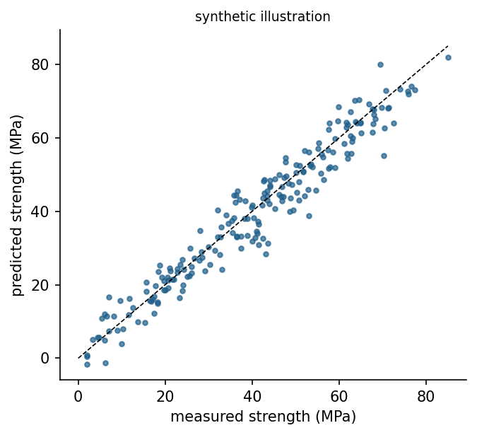

From rules to data
A rule-based system encodes what experts know. A machine learning system estimates a function from examples of inputs and outputs, so that it can predict outputs for new inputs [1]. In supervised learning, every example carries the correct answer: a measured strength, a failure label, a power output. In unsupervised learning, the examples carry no answers and the task is to find structure, such as groups or unusual points, which is the topic of Week 9. In reinforcement learning, an agent learns from rewards obtained by acting, which Week 14 treats. Regression is supervised learning with a continuous target, and classification, the topic of Week 8, predicts a category.
Breiman described two cultures in statistical modelling [2]. The data modelling culture assumes a stochastic model of how the data were generated and estimates its parameters; the algorithmic culture treats the mechanism as unknown and judges models by their predictive accuracy on new data. Engineering needs both views. A fitted coefficient of a physical law can be interpreted and extrapolated with care, while a random forest may predict better inside the range of the data but says little outside it.
The workflow of a data-driven project
The CRISP-DM process model, developed with industrial partners, describes six phases: business understanding, data understanding, data preparation, modelling, evaluation and deployment [3]. The phases form a loop rather than a line, because evaluation often sends the team back to the data. In engineering terms, the first phase fixes the decision that the model will support and the accuracy it needs; the second checks where the data came from, which units they use and which conditions they cover; the third handles missing values, outliers and derived features; and the last phases test the model honestly and document its limits.
Data are evidence and deserve the same care as a laboratory measurement. A dataset records a particular population of mixes, machines or buildings under particular conditions. A model trained on it inherits these limits, and predictions outside the covered range are extrapolations that no validation score protects.
Check your understanding. In which phase of CRISP-DM does a team decide what decision the model will support and how accurate it must be?
Honest evaluation: Splits and cross-validation
A model that is judged on the data it was trained on looks better than it is. The standard protection is to hold out data. A test set is set aside at the start and used once, at the end, to estimate performance on new data. Model choices, such as the degree of a polynomial or the depth of a tree, are made with a validation set or with k-fold cross-validation on the training data: The training data are divided into k parts, each part serves once as validation data while the other parts train the model, and the k scores are averaged. Kohavi's study recommended ten-fold stratified cross-validation for model selection on real-world data [4].
Model complexity trades bias against variance [5, 6]. A model that is too simple misses real structure and has high error on training and new data alike. A model that is too flexible fits the noise of the training data, so its training error is low but its error on new data rises. The best complexity lies between, and only data that the model has not seen can locate it.
Animation: Underfitting and overfitting
Polynomials of growing degree are fitted to noisy samples of a smooth curve. Watch the training error fall steadily while the error on new data first falls and then rises.
Check your understanding. A regression tree reaches a training R-squared of 0.99 and a cross-validated R-squared of 0.61. What is the most likely diagnosis?
Models for regression
Linear regression fits a weighted sum of the inputs by least squares. It is fast, interpretable and a mandatory baseline. Scaling the inputs does not change its predictions but matters for regularised variants. Ridge regression adds a penalty on the squared size of the coefficients, which stabilises the fit when inputs are correlated [7], and the lasso penalises absolute values, which drives some coefficients exactly to zero and selects features [8].
Nonlinear relationships need more flexible models. The k-nearest-neighbour method predicts the average target of the k most similar training examples [9]. A regression tree splits the input space into boxes with a constant prediction in each box [10]. A random forest averages many trees grown on bootstrap samples with random subsets of features, which reduces variance substantially [11]. Gradient boosting adds shallow trees one after another, each correcting the errors of the current ensemble, and implementations such as XGBoost made it a leading method for tabular data [12]. scikit-learn exposes all of these through the same fit and predict interface [13].
Measuring errors
The mean absolute error (MAE) averages the absolute differences between predictions and measurements and keeps the units of the target. The root mean squared error (RMSE) penalises large errors more strongly. The coefficient of determination R-squared compares the model with the constant prediction of the mean: A value of 1 means perfect predictions and 0 means no better than the mean. Numbers alone hide patterns, so a parity plot of predicted against measured values and residual plots against each input belong to every report. A residual trend against age, for example, reveals that the model misses the strength gain of concrete over time.
For concrete, the physics offers guidance. Abrams found that strength falls as the water-cement ratio rises [14], and strength grows with age at a decreasing rate. Yeh showed that neural networks trained on mix proportions and age predict the strength of high-performance concrete better than regression on the traditional ratio alone [15]. A derived feature such as the water-binder ratio can help simple models and makes the model easier to interpret.

Check your understanding. A strength model has an MAE of 4.1 MPa and an R-squared of 0.88. Which statement is correct?
Data leakage
Leakage occurs when information that would not be available at prediction time enters the training data [16]. Typical engineering forms are a feature computed from the target, such as a strength class assigned after testing; a measurement taken after the event to be predicted, such as the repair cost of a failure that the model should anticipate; duplicated specimens that appear in both training and test sets; and preprocessing, such as scaling, fitted on the whole dataset before splitting. Leakage produces excellent validation scores and useless models. The defence is to ask for every feature when and how it becomes known in practice, to split before any fitting, and to wrap preprocessing and model into one pipeline.
Check your understanding. A dataset for predicting pump failure contains the column "hours until repair was completed". What is the problem?
Python step 7: Tables with pandas and honest evaluation with scikit-learn
The Python step of this week is part of the Colab notebook, where every explanation stands next to a cell that runs it and the step closes with a quick check and exercises with immediate feedback. The printable lecture notes contain the same step together with the outputs of its code.
Review cards
Select a card to turn it over.
Continue the week
The week continues with the simulation and the self-assessment of the interactive lab and with the Python step and the hands-on work of the Colab notebook. The week overview lists the discipline challenges, the weekly task and the research assignment.
Interactive lab Colab notebook Self-assessment Week overview and tasks
References
[1] Jordan, M. I., & Mitchell, T. M. (2015). Machine learning: Trends, perspectives, and prospects. Science, 349(6245), 255-260. https://doi.org/10.1126/science.aaa8415
[2] Breiman, L. (2001). Statistical modeling: The two cultures. Statistical Science, 16(3), 199-231. https://doi.org/10.1214/ss/1009213726
[3] Wirth, R., & Hipp, J. (2000). CRISP-DM: Towards a standard process model for data mining. In Proceedings of the 4th International Conference on the Practical Applications of Knowledge Discovery and Data Mining (pp. 29-39).
[4] Kohavi, R. (1995). A study of cross-validation and bootstrap for accuracy estimation and model selection. In Proceedings of the 14th International Joint Conference on Artificial Intelligence (pp. 1137-1143).
[5] Hastie, T., Tibshirani, R., & Friedman, J. (2009). The Elements of Statistical Learning: Data Mining, Inference, and Prediction (2nd ed.). Springer. https://doi.org/10.1007/978-0-387-84858-7
[6] James, G., Witten, D., Hastie, T., & Tibshirani, R. (2021). An Introduction to Statistical Learning (2nd ed.). Springer. https://doi.org/10.1007/978-1-0716-1418-1
[7] Hoerl, A. E., & Kennard, R. W. (1970). Ridge regression: Biased estimation for nonorthogonal problems. Technometrics, 12(1), 55-67. https://doi.org/10.1080/00401706.1970.10488634
[8] Tibshirani, R. (1996). Regression shrinkage and selection via the lasso. Journal of the Royal Statistical Society: Series B (Methodological), 58(1), 267-288. https://doi.org/10.1111/j.2517-6161.1996.tb02080.x
[9] Cover, T., & Hart, P. (1967). Nearest neighbor pattern classification. IEEE Transactions on Information Theory, 13(1), 21-27. https://doi.org/10.1109/TIT.1967.1053964
[10] Breiman, L., Friedman, J. H., Olshen, R. A., & Stone, C. J. (1984). Classification and Regression Trees. Wadsworth.
[11] Breiman, L. (2001). Random forests. Machine Learning, 45(1), 5-32. https://doi.org/10.1023/A:1010933404324
[12] Chen, T., & Guestrin, C. (2016). XGBoost: A scalable tree boosting system. In Proceedings of the 22nd ACM SIGKDD International Conference on Knowledge Discovery and Data Mining (pp. 785-794). https://doi.org/10.1145/2939672.2939785
[13] Pedregosa, F., Varoquaux, G., Gramfort, A., et al. (2011). Scikit-learn: Machine learning in Python. Journal of Machine Learning Research, 12, 2825-2830.
[14] Abrams, D. A. (1918). Design of Concrete Mixtures (Bulletin 1). Structural Materials Research Laboratory, Lewis Institute, Chicago.
[15] Yeh, I.-C. (1998). Modeling of strength of high-performance concrete using artificial neural networks. Cement and Concrete Research, 28(12), 1797-1808. https://doi.org/10.1016/S0008-8846(98)00165-3
[16] Kaufman, S., Rosset, S., Perlich, C., & Stitelman, O. (2012). Leakage in data mining: Formulation, detection, and avoidance. ACM Transactions on Knowledge Discovery from Data, 6(4), 15. https://doi.org/10.1145/2382577.2382579